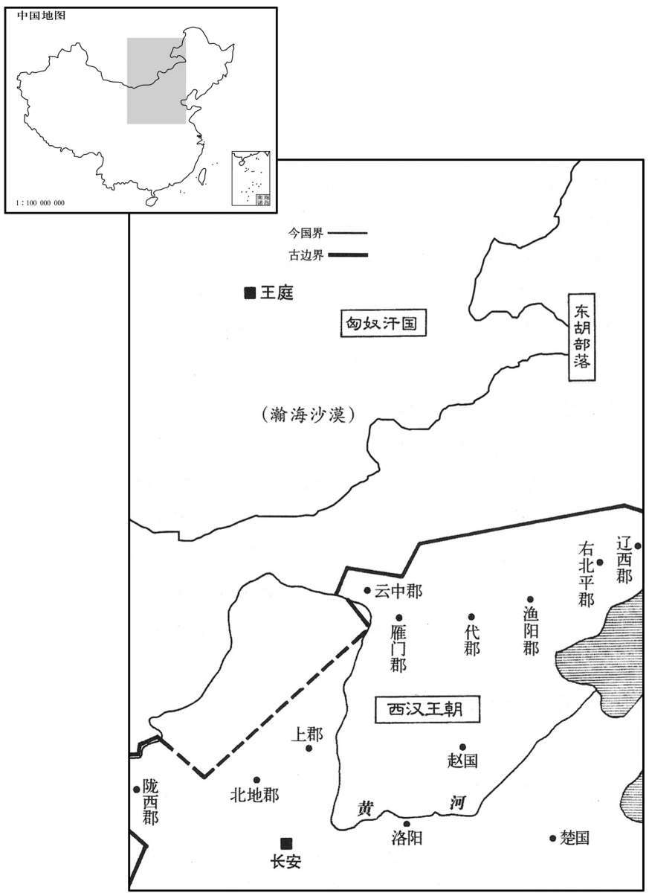

公元前129年资治通鉴：本年记事、原文与白话对照
按原书编年位置阅读；追叙和史论不等于本年发生的事件。白话采用所据译本，缺译不以生成译文补齐。
卷18 · 本年记事
公元前129年 · 汉世宗孝武皇帝元光六年
元光六年〔（壬子、前一二九）〕

本年形势与背景参考图
冬，初算商车。〔李奇曰：始税商贾车船，令出算。〕
冬季，开始对商人的车辆征税。
大司农郑当时言：“穿渭为渠，下至河，〔渠起长安，旁南山下至河三百余里。〕漕关东粟径易，〔易，以豉翻。〕又可以溉渠下民田万余顷。”春，诏发卒数万人穿渠，如当时策，三岁而通，人以为便。
大司农郑当时建议：“从渭水开辟一条河道，下连黄河，用来漕运函谷类以东地区的粮食，路线直而且方便，又可灌溉河道附近的一万多顷农田。”春季，武帝下诏调集数万役卒开掘河道，按照郑当时的建议办事；用了三年时间，河道开通了，大家都认为很方便。
匈奴入上谷，杀略吏民。遣车骑将军卫青出上谷，骑将军公孙敖出代，轻车将军公孙贺出云中，骁骑将军李广出雁门，各万骑，击胡关市下。卫青至龙城，〔龙城，匈奴祭天，大会诸部处。〕得胡首虏七百人；公孙贺无所得；公孙敖为胡所败，亡七千骑；李广亦为胡所败。胡生得广，置两马间，络而盛卧，〔败，补迈翻。盛，时征翻。〕行十余里；广佯死，暂腾而上胡儿马上，〔师古曰：腾，跳跃也。上，时掌翻。〕夺其弓，鞭马南驰，遂得脱归。汉下敖、广吏，〔下，遐嫁翻。〕当斩，赎为庶人；唯青赐爵关内侯。青虽出于奴虏，〔青本平阳公主家骑奴。〕然善骑射，材力绝人；遇士大夫以礼，与士卒有恩，众乐为用，有将帅材，〔骑，奇寄翻。乐，音洛。将，即亮翻。帅，所类翻。〕故每出辄有功。天下由此服上之知人。
匈奴入侵上谷郡，杀害抢掠官吏百姓。武帝派遣车骑将军卫青从上谷郡出兵，骑将军公孙敖从代国出兵，轻车将军公孙贺从云中郡出兵，骁骑将军李广从雁门郡出兵，各自率领一万骑兵，出击屯兵在边关贸易市场附近的匈奴军队。卫青进攻到龙城，斩首和俘获匈奴七百多人；公孙贺一无所得；公孙敖被匈奴打败，损失了七千骑兵；李广也被匈奴打败。匈奴人活捉了李广，把他安置在两匹并行的马匹中间，让他躺在用绳子结成的网袋中，走出了十多里路；李广先是装死，后来突然纵身跃起，跳到了一个匈奴人骑坐的马上，夺得他的弓箭，打着马向南奔驰，于是得以逃脱归来。汉朝廷把公孙敖、李广交付司法官吏审讯，罪当斩首，后出钱赎罪，做了平民；只有卫青被赏给关内侯的爵位。卫青虽然出身于奴仆，但是善于骑马射箭，勇力超过常人；对官吏士大夫以礼相待，对士兵有恩，众人都愿为他效力，他有做军事统帅的才能，所以每次率兵出征能立下战功。天下人由此都佩服武帝的知人善任。
夏，大旱；蝗。
夏季，大旱，出现蝗灾。
六月，上行幸雍。
六月，武帝亲临雍县。
秋，匈奴数盗边，〔数，所角翻。〕渔阳尤甚。以卫尉韩安国为材官将军，屯渔阳。
秋季，匈奴多次攻掠边境，渔阳郡受害最为严重。武帝任命卫尉韩安国担任材官将军，率兵驻守渔阳郡。